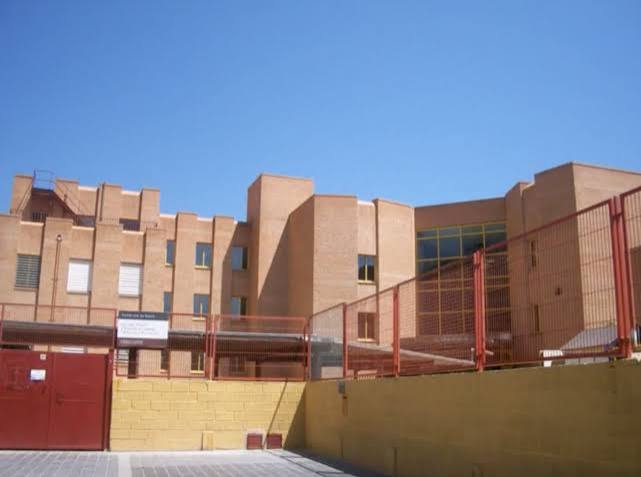

CEIP Cavite OptativaMedios audiovisuales
Mi primera formación en el lenguaje del cine: tipos de planos, encuadre, narrativa y estructura guionizada. Allí mismo tocaba la bandurria en la rondalla del centro, donde aprendí a cooperar para conseguir algo común.
CEIP Cavite · Isla de Hierro